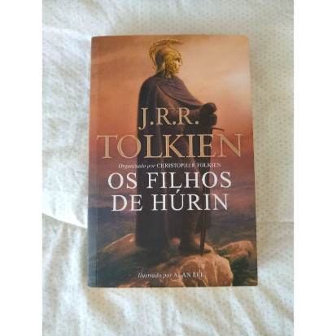

Os Filhos de Húrin
Ao ser capturado pelas forças de Morgoth, o Primeiro Senhor Sombrio,
Húrin resiste às ameaças e torturas que lhe foram impostas no cativeiro e
ousa zombar do líder maligno. As consequências de sua postura resoluta
recaem,na forma de uma maldição,diretamente em sua família.Húrin, um
dos maiores guerreiros humanos de antigas eras, é aprisionado por Morgoth
e amaldiçoado por se recusar a trair os elfos.Acorrentado de forma mágica
a uma cadeira num alto pico, é forçado cruelmente a assistir a todos os
males que se abateram sobre a sua própria família . O seu filho, Túrin,faz
jus à memória do pai, mas ao longo das suas inúmeras batalhas, tragédias
marcam todas as suas ações e todos os que o amam.
Avalie

- Escritor
- J.R.R Tolkien
- Tipo
- Fisico
- Ano de Lançamento
- 2007
- Paginas
- 288
- Idioma
- Português
- Tema
- Fantasia
- ISBN
- 9789510478479